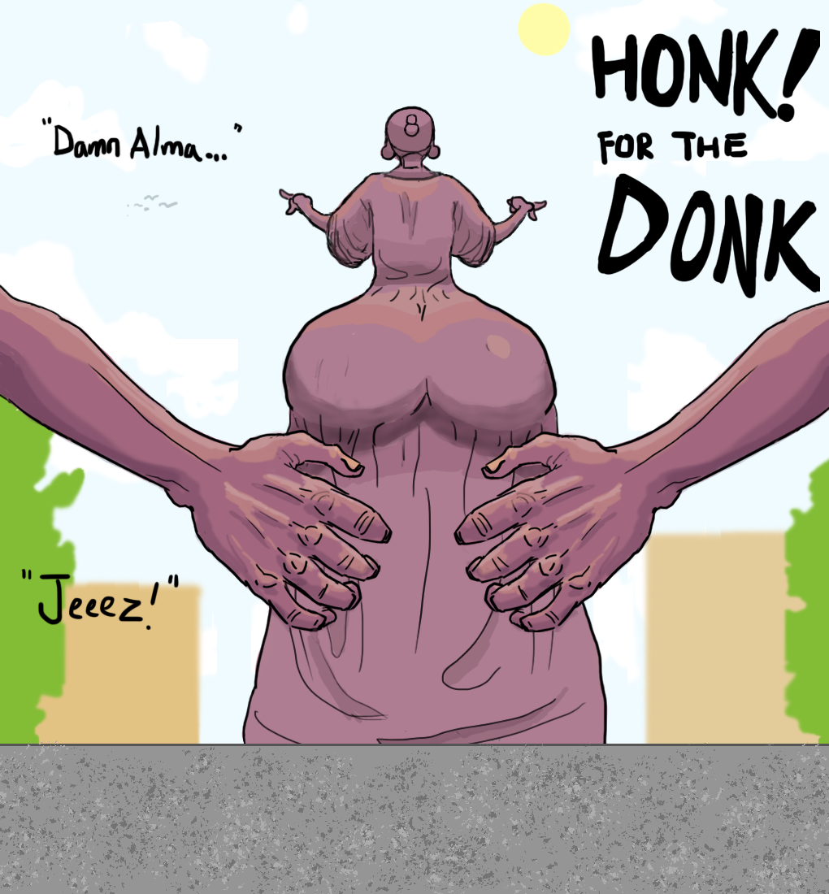
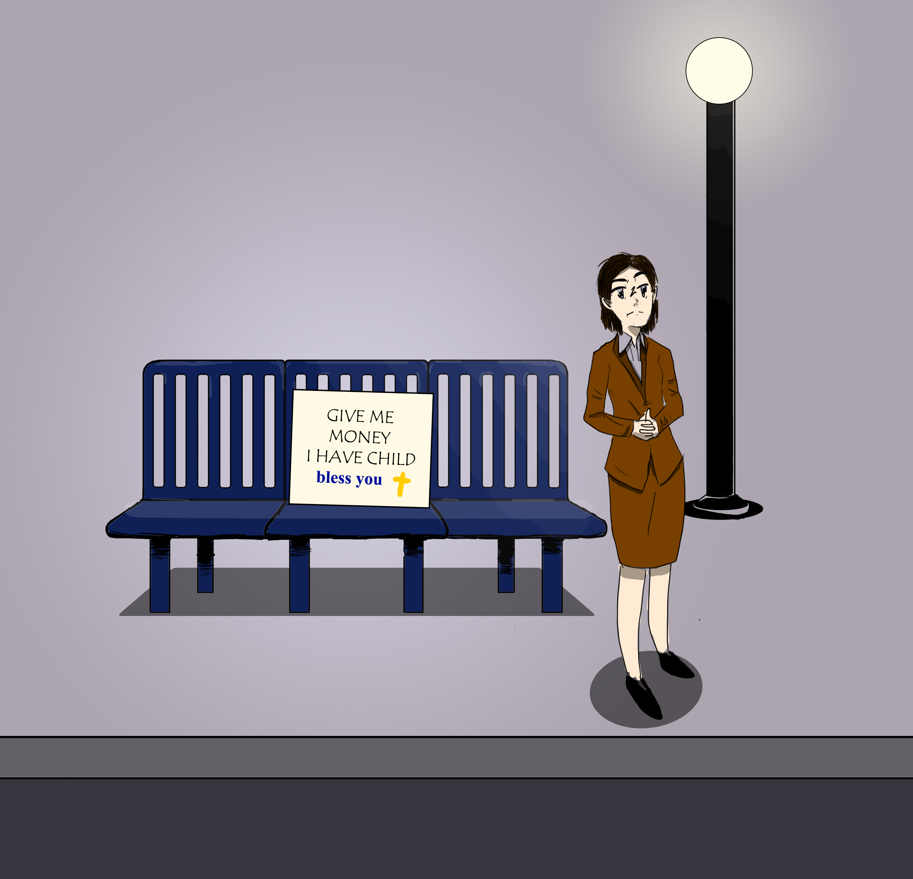
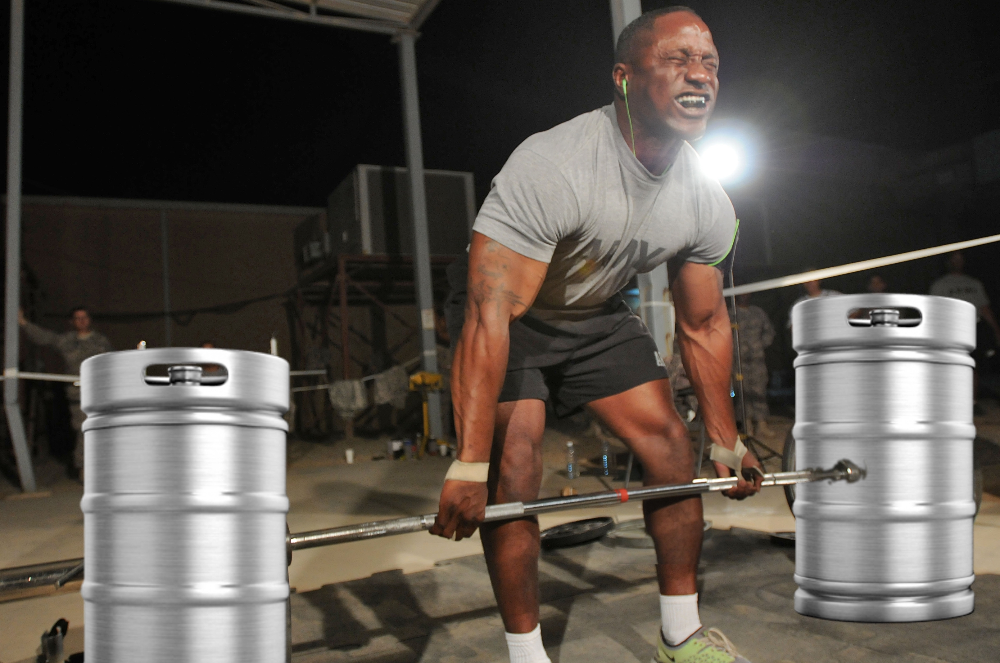
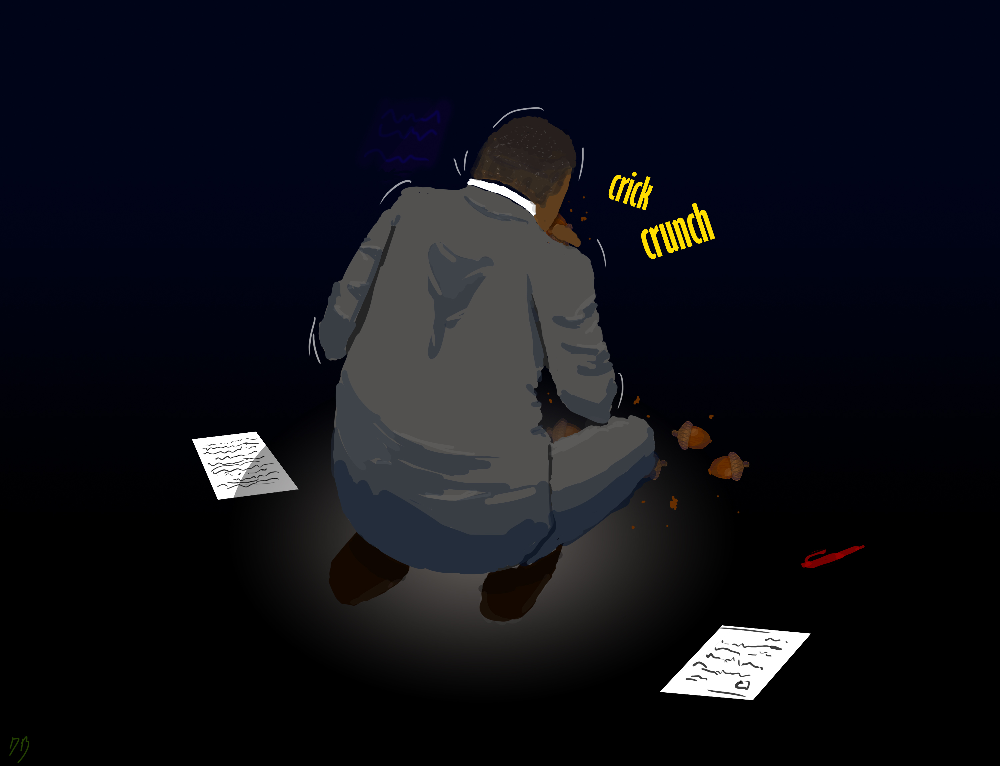
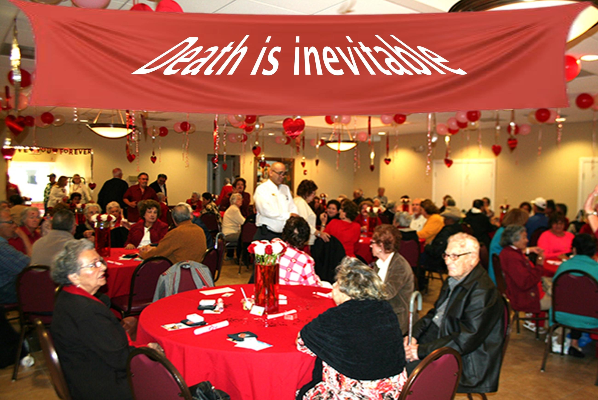

URBANA-CHAMPAIGN, IL— On the morning of September 7th, UIUC students began their day like any other Saturday, squinting their hungover eyes at the blinding sunshine, begrudgingly exiting their beds to trudge on over to the nearest establishment serving coffee.
That was until the deafening sounds were reported at approximately 10 AM.
“It was brazy as f***. The sun was out and everything, Apple Weather said there wasn’t gonna be thunderstorms, but I could just hear this loud booming. Almost sounded like . . . clapping?” recalls UIUC junior, Joseph Ligma.

After receiving notice of the notorious “Pamvile Pam” aka “Carly Stewart” hanging out next to the bus stop of Transit Plaza, the Maize Report sent out a team for an interview.
Pamville Pam: I really do need to get to Pamville. I actually have a bus to catch in thirty minutes so in return for this interview, can I have some cash?

It’s well known and accepted that college campus bartenders are some of the most admirable, important and hard-working people on this Earth. And we at the University of Illinois know that our drink-mixing maestros are some of the greatest. From helping freshman get drunk, to helping professors get drunk, to helping everyone in between get drunk, they do their nuanced and multifaceted work with effortless elegance.

Hello students, parents, university staff and other creatures as closely related to apes as I am. This is a gentle reminder that I, the dean of your wonderful university, am not a genetically enhanced squirrel in a high tech mechanical human suit.

Valentine’s Day is coming up, and, like anywhere else, students here at UIUC are gearing up to take part in this celebration of romance and love. One such group is the Illi-Nihilists, an RSO dedicated to, according to their website “giving back to an unfeeling and uncaring universe.”

“I used to be on the path to greatness. I was even compared to Gates, Musk, and my only real equivalent, Steve. I called him Stevie 2.0. But now I’m here at The University Of Illinois! Haha...
*Stevie and I took a five minute break. Blatant wailing and even random loud banging was heard from the Grainger Library Men’s bathroom.*
Sorry about that... probably shouldn’t have had extra beans at Qdoba...
CAMPUSTOWN, IL — Zooming down East Green during his local commute to the Thomas M. Siebel Center for Computer Science, local student Gregory Chu has been reported thinking he looks really cool on his Boosted Board. “Look at all these people,” Chu said, “They’re probably thinking about how cool I am. I’m so glad my mom agreed to spend 1200$ dollars on this one. It goes really well with these shades too.”
It has been brought to my attention by faculty and parents alike that the lifestyle choices of our students are not indicative of our university’s once high standards.It is my unfortunate obligation to report that UIUC students have become fucking pussies.
They are unable to cram for exams the morning of, losing their stomach after three beers, and losing every other game of competitive League to University of Iowa.
Unless you’re new to the UIUC campus, you’ve probably noticed our university’s newest, most environmentally friendly way to get around campus. In fact, you’ve probably been nearly run over by it on a daily basis! VeoRides are rentable bikes, available all across campus, for students who are running late for class, couldn’t bring their own bikes, or who just want to engage in our university’s culture of exceedingly unsafe biking practices.
 The Maize Report
The Maize Report